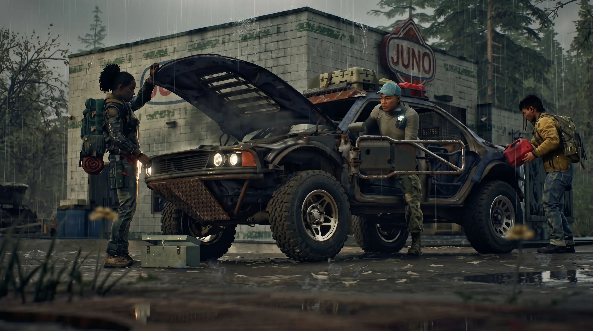

State of Decay 3 Alpha Gameplay Revealed: 72-Minute Raw Footage Breaks Down Dual Combat, Plague Nests & 4-Player Co-op Base Building

State of Decay 3 early alpha gameplay is now publicly available for the first time. On June 18, 2026, YouTuber and Players Council member Brian Menard published a 72-minute raw gameplay session from Undead Labs' upcoming open-world zombie survival sequel — with full, explicit permission from the developer. The footage confirms the game's rebuilt dual-attack melee combat system, Plague Nests as a new evolving dungeon-like threat structure replacing the Plague Hearts of State of Decay 2, open-world scavenging across a seamless Unreal Engine 5 map four times larger than its predecessor, 4-player co-op with a shared persistent world, and early-stage settlement building driven by genuine resource scarcity. State of Decay 3 targets a 2027 release on Xbox Series X|S, PlayStation 5, PC (Steam and Microsoft Store), and Xbox Game Pass — where it will be available to subscribers at no extra cost on day one.
Why does this 72-minute alpha session matter more than the official Xbox Games Showcase 2026 reveal? That curated three-minute trailer, while confirmed as 100% in-game capture by Creative Director Kevin Patzelt, was a highlight reel. Menard's footage is unedited and unfiltered — a complete survival session with visible bugs, placeholder UI, and mid-development animation work. It documents how the mechanical loop actually functions: how resource scarcity forces decision-making under pressure, how the new dual-attack combat chain feels in real time against multiple zombie types, and how Plague Nest encounters are structured from approach to clearing. This is the closest the public has come to sitting behind the keyboard with State of Decay 3, and the community response — a mix of genuine enthusiasm and constructive criticism — is exactly the feedback Undead Labs is actively seeking during its ongoing alpha phase.
State of Decay 3 Early Alpha: Everything the 72-Minute Gameplay Footage Reveals
The 72-minute session documents a complete early-game survival arc, starting the player character at critically low community food and water levels — immediately forcing scavenging runs before the settlement can stabilize. Brian Menard is not simply a content creator: he is a member of Undead Labs' Players Council, meaning his access to this build was formally sanctioned as part of the studio's structured community feedback program. Alpha testing opened in May 2026, and the Players Council represents the first wave of engaged participants providing real-world feedback that directly informs development priorities ahead of the 2027 launch. This context is crucial — the footage was released intentionally, not leaked, and Undead Labs is tracking viewer reactions closely.
Resources visible throughout the session include craft components, adhesive tape, propellant, medicinal herbs, fuel, and healing supplies — a noticeably expanded material taxonomy compared to State of Decay 2. The player must locate three plague feathers, interpret infestation node placements to plan an efficient route, and pause multiple times mid-session to heal and resupply before pressing forward. This survival scarcity loop reflects a deliberate design philosophy: as Creative Director Kevin Patzelt told Xbox Wire, "If you wanted to sit on a hill and watch your settlement burn, the game's gonna do it. The enemy is coming towards you whether you act or not." State of Decay 3's survival is reactive, demanding, and — based on the alpha footage — meaningfully more unforgiving than anything its predecessor delivered.
Exploration, Scavenging & Vehicle Gameplay — The Full Open-World System Breakdown
State of Decay 3's open world runs on Unreal Engine 5, developed in collaboration with The Coalition — Microsoft's Gears of War studio and one of the most technically advanced UE5 teams within Xbox Game Studios — and unfolds across a seamless map confirmed by Undead Labs as roughly four times the size of a single State of Decay 2 map. The world is fully accessible from the first session with no loading screens between zones and no artificial region barriers restricting early-game movement. Vehicle traversal is functional throughout the alpha footage, and fuel consumption is tracked as an active resource concern: players cannot simply drive indefinitely, making fuel management a deliberate logistical factor when planning long-range scavenging runs away from the settlement.
Scavenging mechanics have been substantially deepened. Players must simultaneously manage multiple distinct material categories: food and water to maintain community stability day-to-day, craft components and adhesive to feed into the game's "maker culture" weapon modification and facility upgrade systems, and medical supplies for field healing during encounters. The confirmed in-game example from official Xbox footage — a machete fitted with additional blades and reinforcements, whose visual changes directly map to damage output and durability trade-offs — illustrates how each scavenging run now serves specific crafting objectives rather than generic resource accumulation. Every item type has a named downstream purpose, making exploration feel purposeful and consequential in a way the earlier game rarely achieved.
Crucially, Undead Labs has confirmed that players can now claim and manage up to three distinct settlements simultaneously — a major structural leap over State of Decay 2's single-base model. Each settlement can be optimized toward a different strategic priority: food and water production, a forward operating outpost near a Plague Nest, or a weapons stockpile. Vehicle logistics now serve multiple supply chains at once, and the alpha footage captures the beginning of this multi-settlement ecosystem taking shape across the session as the player's community expands its footprint across the map.
Also Read
More Gaming stories →Plague Nests, Infestations & the Rebuilt Dual Combat System: Alpha Build Deep-Dive
The most strategically significant new threat system in the State of Decay 3 alpha footage is the Plague Nest. These evolve the static Plague Hearts of State of Decay 2 into something fundamentally more dangerous: dynamic enemy hubs that grow, spread throughout the world, and operate — in Creative Director Kevin Patzelt's words — with "their own plans." Rather than sitting inert until the player chooses to clear them, Plague Nests actively react to the world state and escalate their presence if left unchallenged. Patzelt describes them to Xbox Wire as "dungeon-like areas" and the toughest zones on the map, designed to punish under-prepared players while simultaneously guarding the game's best loot — a deliberate risk-reward loop that compels exploration. The alpha footage shows the player approaching a Plague Nest clearing objective, revealing layered encounter design with multiple defenders, structural nodes to destroy, and environmental hazards tied to the nest's spread across that section of the map.
State of Decay 3's rebuilt melee combat system is equally prominent throughout the session. State of Decay 2 operated entirely on a single attack button. State of Decay 3 introduces both a quick attack and a power attack alongside a dedicated dodge roll — confirmed by Patzelt in his post-Xbox Showcase Xbox Wire interview. This dual-attack design produces what the Creative Director calls "fight circles in a sandbox game": players chain quick strikes to reposition multiple zombies, deploy power attacks to break through groups or knock back stronger enemies, and use dodge rolls to create separation and control spacing in real time. The alpha footage shows how encounters escalate dramatically when "freak" enemy types — stronger, behavior-distinct zombie variants unique to State of Decay 3 — enter the combat space, fundamentally shifting available tactics and forcing players to prioritize threats mid-fight rather than cycling through a single optimal input.
Weapon crafting and Undead Labs' broader "maker culture" design philosophy add another meaningful layer to the combat loop. Survivors in this world do not find ready-made weapons — they build and modify them from scavenged components, reflecting what resourceful people in a prolonged apocalypse would actually do. Craft components, adhesive, and materials gathered during exploration feed directly into weapon modification recipes. The confirmed modified machete example — fitted with additional blades and reinforcements whose visual changes map directly to gameplay stats — represents the type of tangible reward system that incentivizes prioritizing specific material types on every scavenging run.
On the enemy side, the zombie roster carries over from State of Decay 2 but with significantly more differentiated AI behavior. Each enemy type now responds distinctly to player positioning, attack type, and movement, requiring tactical adaptation rather than repetitive button inputs. This behavioral differentiation is part of the broader combat elevation that Patzelt calls "the biggest quality level-up in Undead Labs' history" — an ambition made credible by the ongoing technical collaboration with The Coalition, whose deep expertise in third-person melee encounter design through the Gears of War franchise gives Undead Labs an exceptional knowledge base to draw from as development continues toward the 2027 release window.
Key Takeaways
- State of Decay 3 runs on Unreal Engine 5 with a seamless open world four times larger than State of Decay 2, launching day one on Xbox Game Pass alongside Xbox Series X|S, PlayStation 5, and PC in 2027.
- The rebuilt dual-attack melee system — quick attack, power attack, and dedicated dodge — replaces State of Decay 2's single attack button and fundamentally changes how combat encounters play out, especially when freak enemy types enter the fight.
- Plague Nests are the game's primary evolving threat: dynamic, dungeon-like enemy hubs that grow and react to the world state, guard the best loot, and replace the static Plague Hearts from State of Decay 2.
- 4-player untethered co-op operates on a shared persistent world with asynchronous progression — players can build facilities, advance the story, and supply multiple settlements even when other squad members are offline.
- Brian Menard's 72-minute footage is confirmed early alpha content: visible bugs, placeholder UI, and work-in-progress animations are expected at this stage and do not represent the final quality of the 2027 release.
Frequently Asked Questions
Q: When was State of Decay 3 gameplay first publicly shown?
State of Decay 3 received public gameplay exposure in two distinct phases. The first official gameplay trailer premiered at Xbox Games Showcase 2026 on June 7, 2026 — a curated three-minute reel confirmed by Creative Director Kevin Patzelt as 100% in-game capture with zero CGI, showing open-world exploration, settlement building, weapon crafting, multiplayer, and combat. Then, on June 18, 2026, Players Council member and YouTuber Brian Menard published 72 minutes of raw early alpha gameplay with full permission from Undead Labs — providing the most unfiltered, unedited look at the actual mechanics and survival loop that the public has seen to date.
Q: What does the State of Decay 3 alpha footage show?
The 72-minute video documents the complete early-game survival loop in real time: open-world exploration and scavenging across a large Unreal Engine 5 world; fuel-managed vehicle traversal; resource gathering covering craft materials, adhesive tape, propellant, medicinal herbs, fuel, and healing supplies; the rebuilt dual-attack melee combat system (quick attack, power attack, and dodge); Plague Nest encounter design including plague feather detection and infestation node interpretation; and early-stage settlement building under active food and water scarcity. The player begins with critically low community resources and must run multiple resupply missions before the base reaches stability — demonstrating the game's survival pressure loop in unscripted, real-time conditions.
Q: Is the State of Decay 3 alpha footage representative of the final game?
No. Brian Menard was explicit that the footage captures an early alpha build, and this is plainly visible throughout: animation glitches, placeholder UI elements, untuned resource values, and incomplete visual effects appear across the session. Creative Director Kevin Patzelt has separately confirmed that systems, animations, visuals, balancing, and features are all still in active iteration. The mechanical foundation is real and functional, but the final quality standard Undead Labs is targeting for the 2027 launch will be substantially above what the alpha footage currently reflects.
Q: When will State of Decay 3 release and on what platforms?
State of Decay 3 is targeting a 2027 release window. The game will launch on Xbox Series X|S, PlayStation 5, and PC via Steam and the Microsoft Store. It will be included in Xbox Game Pass at launch — making it available to subscribers at no additional purchase cost — and supports Xbox Play Anywhere for cross-progression between Xbox console and PC. No specific release month or date within the 2027 window has been officially confirmed by Undead Labs as of June 2026.
Q: What is new in State of Decay 3 compared to State of Decay 2?
State of Decay 3 introduces six major upgrades over its predecessor: (1) Unreal Engine 5 for dramatically improved visuals, world persistence, lighting, and destruction; (2) a rebuilt dual-attack melee system with quick attacks, power attacks, and dodging — replacing SOD2's single attack button; (3) dynamic Plague Nests, dungeon-like evolving enemy hubs that grow and react to the world, replacing the static Plague Hearts of SOD2; (4) fully untethered 4-player co-op in a shared persistent world with asynchronous progression; (5) multi-settlement management supporting up to three simultaneous bases, each with independent optimization; and (6) a seamless open world roughly four times the size of a single State of Decay 2 map, fully accessible from session start.
Q: Who published the State of Decay 3 alpha gameplay video?
Brian Menard — a content creator and member of Undead Labs' Players Council — published the 72-minute raw alpha gameplay video on June 18, 2026, with explicit permission from the developer. The Players Council is Undead Labs' structured community access program, giving selected players and creators early build access in exchange for real-world feedback that informs active development decisions. Menard was transparent throughout the video that the build contains bugs and unfinished content, accurately framing it as a development snapshot rather than a promotional preview of finished work.
Q: What is the State of Decay 3 map size compared to State of Decay 2?
Undead Labs has confirmed that the State of Decay 3 world is roughly four times the size of a single State of Decay 2 map. The entire world is seamlessly accessible from the very start of a session, with no loading screens between regions and no early-game area restrictions gating player movement. This dramatically expanded scale underpins the multi-settlement system, demands active vehicle and fuel management for effective long-range exploration, and creates the geographic separation that makes truly untethered co-op — where players can operate in entirely different parts of the map simultaneously — a genuinely distinct feature rather than a superficial mode toggle.
Q: Is State of Decay 3 coming to PlayStation 5?
Yes. In a significant multiplatform expansion for Xbox Game Studios, State of Decay 3 will launch day one on PlayStation 5 alongside Xbox Series X|S and PC, with full cross-play support across all platforms. PlayStation 5 players can purchase and download the game directly through the PlayStation Store. Xbox and PC players receive the game through Xbox Game Pass at no additional cost under the Xbox Play Anywhere initiative. This day-one PS5 release marks a notable departure from the Xbox-exclusive strategy of previous State of Decay entries and substantially expands the potential co-op player pool at launch, particularly for the game's 4-player shared-world mode.
Conclusion
The State of Decay 3 early alpha gameplay footage published by Brian Menard on June 18, 2026 is the most substantive public evidence yet that Undead Labs' ambitious rebuild of the survival sandbox franchise is on track and producing real, functional systems. Across 72 unfiltered minutes, the footage confirms all four core pillars that will define State of Decay 3: a rebuilt dual-attack melee combat engine with genuine tactical depth, Plague Nests as dynamic dungeon-like threat hubs that evolve and react to the living world, open-world exploration across a UE5-powered seamless map four times the scale of its predecessor, and 4-player co-op anchored in a shared persistent world with asynchronous progression. Developed in collaboration with The Coalition — whose Gears of War pedigree brings deep third-person combat expertise — and built on Unreal Engine 5, the technical foundation is a generational leap that the previous game simply could not approach.
With alpha testing live since May 2026 and additional playtest waves planned across the remainder of the year, Undead Labs is building State of Decay 3 through direct, structured community input — a development philosophy that produces better-calibrated and more community-aligned products at launch. Players interested in getting early hands-on access can join the official State of Decay 3 playtest waitlist at the game's official website. Launching in 2027 across Xbox Series X|S, PlayStation 5, PC, and Xbox Game Pass, State of Decay 3 is positioned to be the most ambitious and broadly accessible entry in the franchise's history. The alpha footage is rough and unpolished — as expected — but the systems it reveals are compelling enough to validate the six-year development wait for fans of the series.

Marcus J. Holloway
Senior Tech Educator & AI Researcher
Technology and gaming journalist with 15+ years of experience covering Nintendo, Sony, and Microsoft platforms. Has tracked Zelda franchise developments across every generation from N64 to Switch 2. Dedicated to making complex gaming industry developments accessible to readers worldwide through Ultimate Schooling.
💬 Questions or Comments?
Have a question about this tutorial or want to share your thoughts? Leave a comment below!